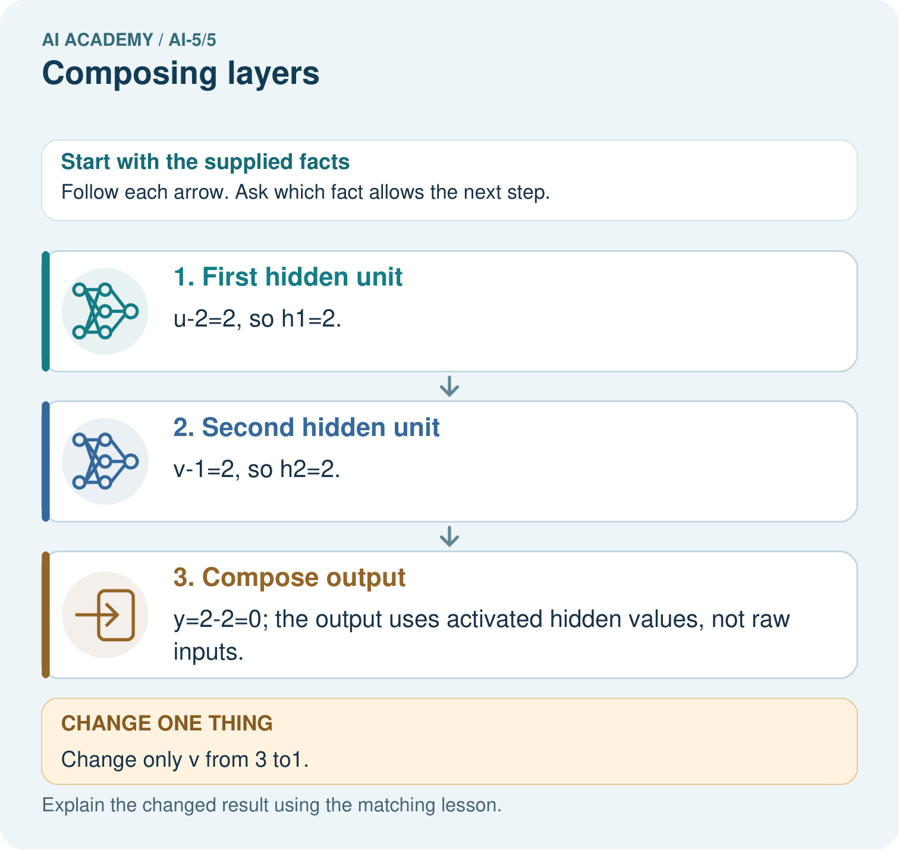
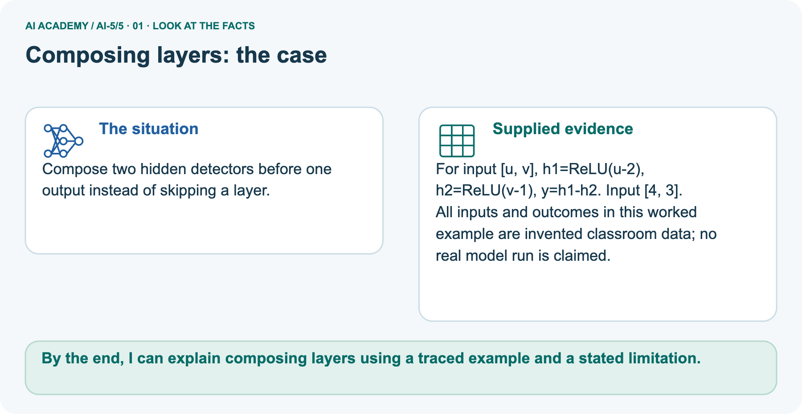
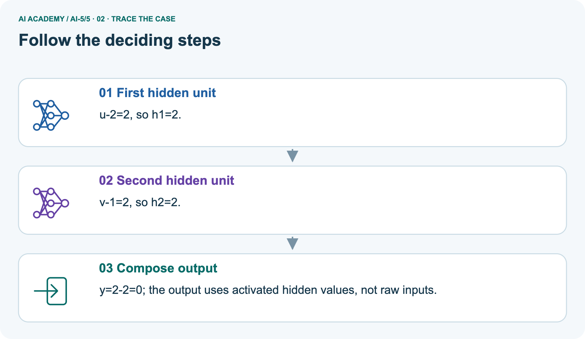
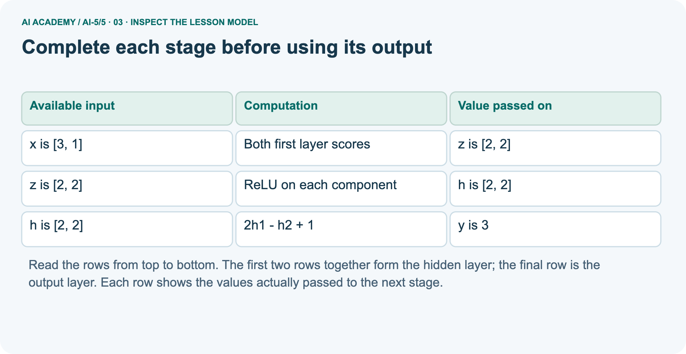
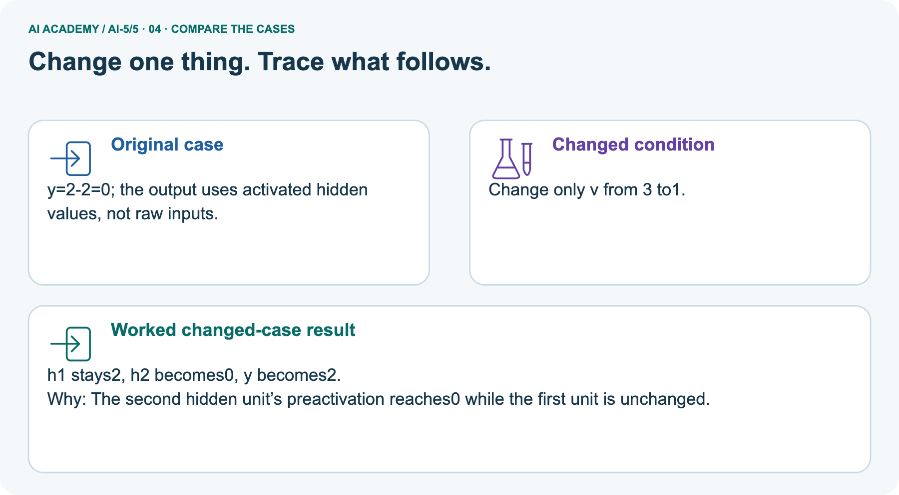
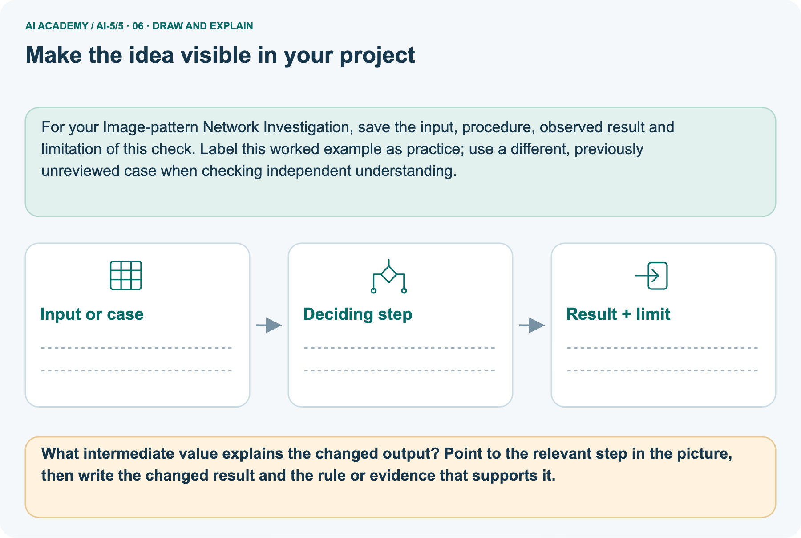

AI Academy · Level 5 · Grade 10 · Week 5 · Workbook
Composing layers
Learn to understand, design, build, test and explain AI systems responsibly.
Project: Image-pattern Network Investigation
Workbook · 1 of 15
Recall and choose your starting point
Record your starting explanation for Composing layers before opening notes. Show any later correction separately.
Try the recall before opening notes. Then use a different colour or a labelled second line to correct your explanation.
Activation functions
Without opening the old lesson, explain one key idea from Activation functions. Give an example and a mistake that the idea helps you avoid.
Dot products and weighted sums
Without opening the old lesson, explain one key idea from Dot products and weighted sums. Give an example and a mistake that the idea helps you avoid.
Workbook · 2 of 15
Practise with fading help
Complete the supported Composing layers trace and record the first step you can explain without help.
Use W2: Repair a dimension mismatch for Composing layers. Record the answer once; the lesson and workbook refer to the same attempt.
| Given inputs | Procedure I chose | Middle steps | Result and check |
|---|---|---|---|
Workbook · 3 of 15
Individual reasoning check
Check the proposed Composing layers explanation against the supplied facts before discussing it.
Use the worked case for Composing layers. Proposed explanation: “The second hidden unit receives the first hidden unit output”. Decide whether this explanation is supported.
Point to the step or supplied fact that decides; explain your repair if needed.
Workbook · 4 of 15
Independent transfer case
Write one first attempt at the reserved independent case before feedback. Repeated copies of that case refer to the same recorded attempt.
Independent case: Compose a new network independently
A new model takes [u, v]. Compute a = ReLU(u + v - 3), b = ReLU(u - v), then q = a + 2b - 1. Trace both inputs [2, 1] and [1, 2], including scores before ReLU. Apply class 1 when q >= 0.
State the hidden and output vector sizes.
Attempt this case before feedback. Record any help. Earlier examples below are further practice; a case already practised with feedback cannot establish fresh transfer.
Workbook · 5 of 15
W1 Trace the second worked case
Trace the second worked case. Apply the supplied Composing layers facts and keep your reasoning.
For x = [1, 3], write both scores, both ReLU activations and y using the lesson model.
Workbook · 6 of 15
W2 Repair a dimension mismatch
Repair a dimension mismatch. Apply the supplied Composing layers facts and keep your reasoning.
A revised hidden layer returns [h1, h2, h3]. The output layer still has weights [2, -1]. Explain the mismatch and what must be specified before calculation.
Workbook · 7 of 15
W3 Use a revealing order check
Use a revealing order check. Apply the supplied Composing layers facts and keep your reasoning.
Compare hidden vectors for x = [4, 1] and x = [3, 0]. Which input reveals a bug that swaps h1 and h2 but keeps output weights unchanged? Give correct and swapped outputs for that input.
Workbook · 8 of 15
W4 Compose a new network independently
Attempt before feedback. If this repeats the selected independent case, reuse that first attempt; otherwise keep a separate record. Compose a new network independently. Apply the supplied Composing layers facts and keep your reasoning.
A new model takes [u, v]. Compute a = ReLU(u + v - 3), b = ReLU(u - v), then q = a + 2b - 1. Trace both inputs [2, 1] and [1, 2], including scores before ReLU. Apply class 1 when q >= 0.
State the hidden and output vector sizes.
Workbook · 9 of 15
W5 Explain information loss
Explain information loss. Apply the supplied Composing layers facts and keep your reasoning.
Use the lesson model to verify h and y for [0, 1] and [0, 2]. Could a fixed later layer receiving only h distinguish the two original inputs?
Workbook · 10 of 15
Project checkpoint and reflection
Connect Composing layers to Image-pattern Network Investigation, identify a limit and choose the next useful test.
Add a labelled composing layers evidence sheet to Image-pattern Network Investigation. Show how you can trace how one layer supplies the next layer inputs.
Use the supplied fictional case and keep its inputs, intermediate steps, calculation or prediction, and limitation. Connect this record to last week’s record; a matching answer without a trace is insufficient.
Workbook · 11 of 15
Feedback, return check and learning record
Record the first repaired step and a different case to revisit after a delay.
| Evidence | My record |
|---|---|
| Worked alone / hint / model | |
| First step I repaired and why | |
| New case checked later; date and result | |
| What I can now explain without notes | |
| One remaining question |
Revisit this idea with your teacher after a delay. Familiarity is different from explaining and using it on a changed case.
Workbook · 12 of 15
Pictorial case practice: Composing layers
Compose two hidden detectors before one output instead of skipping a layer. Explain the labelled step before checking the changed condition.
Compose two hidden detectors before one output instead of skipping a layer.
For input [u, v], h1=ReLU(u-2), h2=ReLU(v-1), y=h1-h2. Input [4, 3].
All inputs and outcomes in this worked example are invented classroom data; no real model run is claimed.

What intermediate value explains the changed output? Point to the relevant step in the picture, then write the changed result and the rule or evidence that supports it.
Record the help used
Support used: alone / hint / worked example. This record is practice evidence.
Project connection: For your Image-pattern Network Investigation, save the input, procedure, observed result and limitation of this check.
Label this worked example as practice; use a different, previously unreviewed case when checking independent understanding.
Workbook · 13 of 15
Project portfolio milestone
Keep this week’s input, deciding step, result and limit together in the Image-pattern Network Investigation record.
Project: Image-pattern Network Investigation
Current milestone: Frame the need. Name the user, the problem, allowed inputs and a safe simple starting method.
For your Image-pattern Network Investigation, save the input, procedure, observed result and limitation of this check.
Label this worked example as practice; use a different, previously unreviewed case when checking independent understanding.
| Evidence to keep | My record |
|---|---|
| This week’s input and deciding step | |
| Prediction and actual result (or labelled paper trace) | |
| One change since the previous checkpoint and why | |
| One error or limit and the next test |
Workbook · 14 of 15
Supported practice and learning evidence
Try the supported questions before comparing with hints and feedback. Record what you repaired and the evidence you retained.
Use this supported practice once, in the browser or on paper. Keep the reserved independent assessment for a separate first attempt before teacher feedback.
Compose two hidden detectors before one output instead of skipping a layer.
Practice 1: explain the deciding evidence
Which labelled step matches this detail? y=2-2=0; the output uses activated hidden values, not raw inputs.
1. Compose output
2. Second hidden unit
3. First hidden unit
Hint · try first
Hint if needed: Read the steps in the pictorial case. Match the supplied detail to the stage that performs or records it.
Feedback · compare after trying
After your attempt, compare with the supported explanation: Compose output y=2-2=0; the output uses activated hidden values, not raw inputs. Composition means one layer’s result becomes the next layer’s input.
Compute both hidden units before combining them. At [4,3], their equal outputs cancel. Lowering only the second input removes its positive hidden contribution, so subtracting it no longer reduces the output.
The final subtraction must use activated hidden values rather than the raw measurements.
Practice 2: explain the deciding evidence
Changed case · predict first
Changed-case practice: Change only v from 3 to1. Which conclusion is supported by the supplied facts?
1. h1 stays2, h2 becomes0, y becomes2.
2. We can decide the result without examining the changed input or the procedure.
3. This one example guarantees correct results for every future input.
Hint · try first
Hint if needed: Use the changed condition and the deciding step in the pictorial trace. The answer must say what follows from those facts.
Feedback · compare after trying
After your attempt, compare with the supported explanation: h1 stays2, h2 becomes0, y becomes2. The second hidden unit’s preactivation reaches0 while the first unit is unchanged.
Repair a missing building block
Review Activation functions (ai-5/4). Goal: Trace identity ReLU and sigmoid on a numerical score. Short practice: Which original inputs cannot be distinguished by this network’s final output?
Point to the relevant step in the picture, then write the changed result and the rule or evidence that supports it.. Return to this week and explain what you changed.
Review Dot products and weighted sums (ai-5/2). Goal: Calculate a dot product by matching feature positions. Short practice: Which connection explains why more right brightness lowers this score?
Point to the relevant step in the picture, then write the changed result and the rule or evidence that supports it.. Return to this week and explain what you changed.
Predict, run and debug
The browser lab lets you edit the supported Python examples already included in this lesson. Predict first, run, inspect the actual output or error, change one input, then run again.
Keep code, predictions, actual results and a reasoned revision together. On paper, label your result as a trace rather than an execution.
Keep your completed work
Use Download completed work in the hosted lesson to export your answers, reflections, practice feedback and code-run evidence. Open the HTML copy to read or print it.
Drafts stay in this browser when storage is available; clear drafts on a shared device.
Workbook · 15 of 15
Visual concept journey
Explain each Composing layers picture from its labels, then record a relevant limit.
01. Composing layers: the case

Compose two hidden detectors before one output instead of skipping a layer. Supplied facts: For input [u, v], h1=ReLU(u-2), h2=ReLU(v-1), y=h1-h2. Input [4, 3].
All inputs and outcomes in this worked example are invented classroom data; no real model run is claimed.
Point to the given fact that matters most. Explain why it matters.
02. Follow the deciding steps

First hidden unit: u-2=2, so h1=2. → Second hidden unit: v-1=2, so h2=2. → Compose output: y=2-2=0; the output uses activated hidden values, not raw inputs.
Point to each numbered stage and explain which recorded input it uses.
03. Complete each stage before using its output

Complete each stage before using its output. x is [3, 1] | Both first layer scores | z is [2, 2]. z is [2, 2] | ReLU on each component | h is [2, 2]. h is [2, 2] | 2h1 - h2 + 1 | y is 3
Read the labels and values. Explain the relationship the model shows.
04. Change one thing. Trace what follows.

Original case: y=2-2=0; the output uses activated hidden values, not raw inputs. Changed condition: Change only v from 3 to1. Expected result: h1 stays2, h2 becomes0, y becomes2.
Reason: The second hidden unit’s preactivation reaches0 while the first unit is unchanged.
Predict before checking the worked changed-case result. Name what changed and what the supplied facts allow you to conclude.
05. Connect the explanation to its limit
![Composition means one layer’s result becomes the next layer’s input. Compute both hidden units before combining them. At [4,3], their equal outputs cancel. Lowering only the second input removes its positive hidden contribution, so subtracting it no longer reduces the output. The final subtraction must use activated hidden values rather than the raw measurements. Limit: Hand-composed detectors illustrate layer order; they are not evidence of a learned or biologically realistic neural mechanism.](../assets/academy-story-ai-5-5-05.png)
Composition means one layer’s result becomes the next layer’s input. Compute both hidden units before combining them. At [4,3], their equal outputs cancel.
Lowering only the second input removes its positive hidden contribution, so subtracting it no longer reduces the output. The final subtraction must use activated hidden values rather than the raw measurements.
Limit: Hand-composed detectors illustrate layer order; they are not evidence of a learned or biologically realistic neural mechanism.
Explain the case, then point to a limit on the claim.
06. Make the idea visible in your project

For your Image-pattern Network Investigation, save the input, procedure, observed result and limitation of this check.
Label this worked example as practice; use a different, previously unreviewed case when checking independent understanding. Draw your input, deciding step, result and limit.
Supported question: What intermediate value explains the changed output? Point to the relevant step in the picture, then write the changed result and the rule or evidence that supports it.
Draw your project trace and justify the deciding step using evidence.